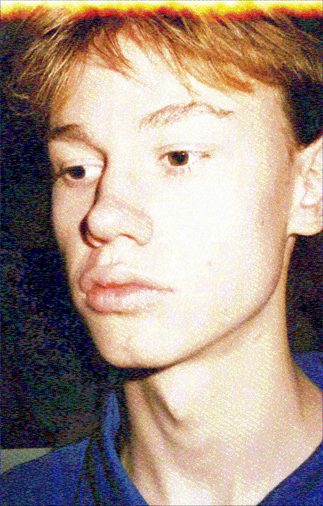

my name is pier woudstra & I am a Dutch/ Croatian musician, composer & music technologist based in Utrecht, currently studying Music & Technology at the University of the Arts in Utrecht. the common thread in my work is the blending of traditional (folk) musical ideas with contemporary (often electronic) techniques.
to blend these successfully I research subjects regarding existing forms of traditional music and contemporary ways to manipulate sound. combining two worlds, I am comfortable with musical notation, as well as Max MSP and Ableton Live, amongst other techniques.
you can contact me at pier.johannes@gmail.com
